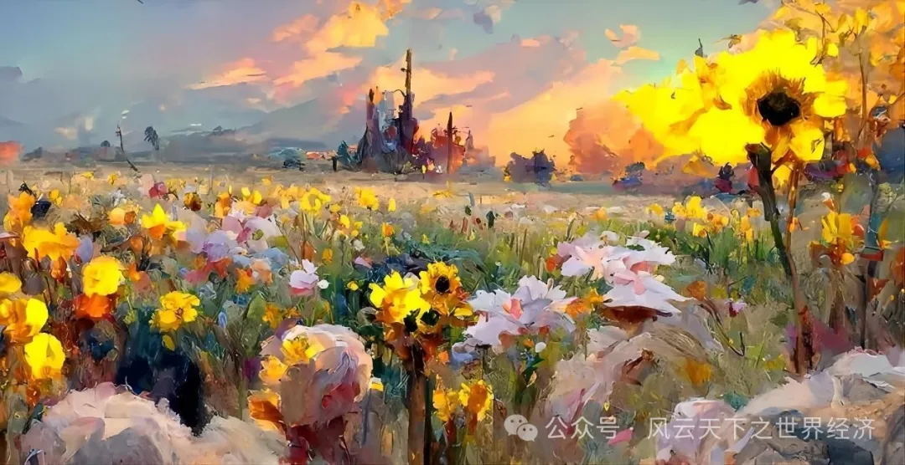
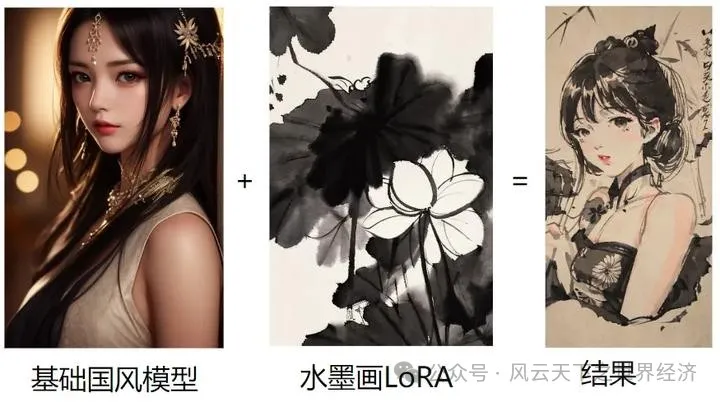
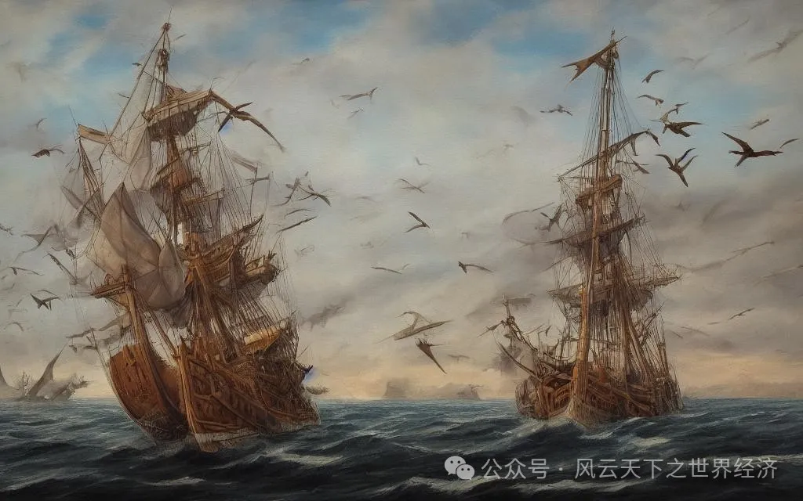
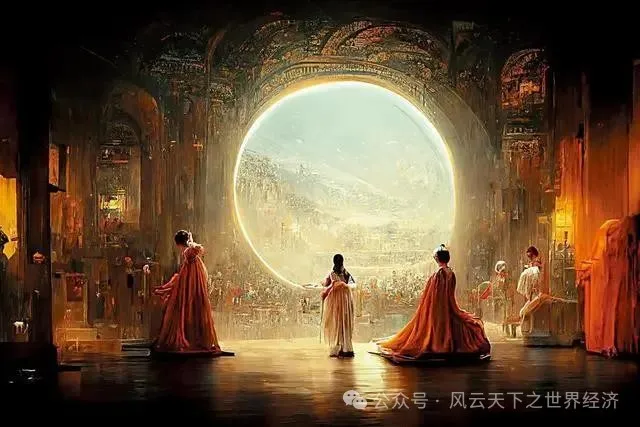

在ChatGPT席卷全球之前的2022年，AI内容创作曾在互联网上掀起热潮，其中尤以AI绘画最为热门，NovelAI、MidJourney、Stable Diffusion等AI绘画工具的横空出世震动了整个艺术圈。AI绘画以一种前所未有的方式丰富了我们的视觉，也带了无休止的争论……
工具还是艺术家？
AI 绘画是一种利用机器学习算法创作视觉作品的方法。就像一个勤奋好学的学生，科学家和工程师们给这位学生提供成海量图像，告诉他图像的关键标签，再让他不断尝试归纳推理图像标签。AI不能像艺术家那样“理解”具体事物，但通过归纳推理，AI可以“预言”带有某个标签的画作中主题、色彩组合、亮度。当输入相关文本时，AI就会通过这些文本去匹配数据库的关键标签，并将它们以重组的形式进行生成绘制。
AI绘画软件应该被视为一种工具，不仅是因为机器没有“灵感”与“感情”，更是因为AI绘画软件不会主动地将这些不可捉摸的感觉具象化。换个角度来想，AI绘画帮助普通人也能像艺术家那样将想法具象化，帮助人们将稍纵即逝的灵感抽象成几个标签，再在画幅之上重现而出。某种意义上，AI绘画帮助普通人跨过了绘画技术的高门槛，让普通人有机会表达自己的灵感与感情。
如果将AI绘画软件视作一门工具，那么我们可以顺理成章地认为：AI绘画与原始人在洞穴里留下的壁画、文艺复兴时的伟大作品本质是一样的，只是人类手头的工具从燃尽的木炭、调色盘与画笔进化到了如今的电脑软件。现在，AI绘画通过超强的学习能力与超强的创作能力，帮助普通人越过了绘画学习的鸿沟，从而让画家这个群体史无前例地迎来膨胀。人类艺术史将会被AI绘画添上浓墨重彩的一笔，甚至被这门不受主流所接受的工具所改写。

来源：Artstation平台,由Greg Rutkowski与Thomas Kinkade使Disco Diffusio进行创作。
原创性争论：忒修斯之船的暗喻
忒修斯之船是最古老的思想实验之一：有这样的一艘船，当一块甲板腐烂了，就会被另一块新甲板替换，经过无数次替换后，这艘船的所有部件都替换成新的部件。问题是：这艘一个原件都不剩的船还是原来的船吗？如果把换下来的部件重新组成一艘船，那么哪艘船才是原来的船？
忒修斯之船暗喻了AI绘画的困境：如果只是把原有画作的要素集中生成另一幅画作，这幅画作是否涉嫌抄袭？直觉上来说，虽然能在AI绘画上看到过去作品的影子，但它以全新的方式进行了排布。要素不是原创的，但排布生成是原创的。沿用忒修斯之船的比喻，如果将成千上万艘船换下来的部件重新组装成一条新船，也没人会将这艘新船视作之前海量的忒修斯之船中的一艘。真正需要关注的是“抄袭比例”与“抄袭要素”的问题：有多少比例重合才能被判为抄袭？抄袭了哪些部分才算是抄袭？
很有意思的一点是，AI绘画在技术基础上就避开了这两个问题：AI绘画软件最早是基于深度学习的人工智能绘画模型“生成对抗网络”，后来又逐渐发展成“创造对抗网络”，名字中的“对抗”，实际上是指生成模型与识别模型之间的对抗。如果生成模型所生成出的图像抄袭比例过高，则会被识别模型判别作“废稿”。这种技术基础决定了AI绘画生成的绘画不会与作为素材的绘画重合度过高，从而避免了忒修斯之船与前体中的任意一艘船相似。除非AI绘画软件的使用者有意为之，刻意地对AI绘画模型进行定向调整，否则AI绘画软件不会生成构成抄袭的画作。

来源：知乎博主“腾讯云开发者”
艺术界不反感AI绘画作品，艺术界真正反感的，是AI绘画工具开发者们不经允许，便使用创作者投入精力与时间创作的作品“喂”给AI作为训练的内容。国内社交平台Lofter曾发布过一个AI绘画功能，但其未经允许便收集了平台中的绘画作品作为AI绘画素材。平台上大量的同人内容创作者或画师中的一部分人，开始仿照去年Art Station上艺术家的做法，集中上传一张“对AI绘画说不！”的图片，反对AI绘图工具的上线。另一部分创作者则声明退出Lofter，以此来表明自己对未经允许便收集作品的态度。
这艘意想不到的忒修斯之船带领人们从乏味的已知领域驶入前所未见的艺术界领域。有时候AI绘画生成的作品让人啼笑皆非，但这些作品都在向未知进军，不要忘了，所有青史留名的艺术家们都曾被认为离经叛道。正是这种背离常识的尝试，才让人类艺术史如此生动多姿。

来源：知乎博主“M-ing”
艺术市场：劣币驱逐良币？
AI绘画会导致“劣币驱逐良币”的现象吗？按照格雷欣法则的观点，由于实际价值更高，相比于劣币，良币更容易被收藏、融化、重铸，最后市场上流通的都是实际价值更低的劣币，从而形成“劣币驱逐良币”。鉴于“货币重铸”与“AI学习生成”之间的相似性。我们暂时把AI绘画定义为“劣币”，将人类的画作称为“良币”。但无论是在低端绘画市场还是高端绘画市场，我们都不会看见劣币驱逐良币的现象。
在低端绘画市场中，内容创作者常常是数量庞大的画手与画师，他们的作品有些类似于照本宣科，千篇一律的画作注定可替代性强，AI绘画与人类画师的作品拉不开差距，所以不存在所谓的“劣币”与“良币”。AI绘画软件将会对低端绘画市场造成巨大冲击，我们可以观察到的是，目前已有不少杂志选择使用AI绘图作为文章配图，这体现了日渐成熟的AI绘画软件会不断替代低端画手。这个市场上没有“劣币”与“良币”之分，有的是供需关系的进一步调整。
而在私人定制与高端艺术品为主流的高端市场中，AI绘画目前无法做到对艺术家的取代，观众只认可人类绘画，在大众眼中，AI绘画并不是一种“工具”，而是基于抄袭模仿的投机取巧产物。让我们设想这样一个场景：你逛画展时，被一幅富含激情的绘画中感受到了澎湃的情感，你觉得这幅画的作者画出了你想要的感觉，于是掏了上千元买入了这幅画，后来你才得知，这幅画是用AI绘画软件画的，要是想要，还有成百上千件差不多的作品随意挑选——现在，你是不是感觉被骗了？
这个场景是真实发生过的：2024年2月，一个自媒体账号发布了一条“假如美院人看黄龙江都戴蓝牙？！”的短视频，其中，三位主人公以一幅巨制绘画还原了网络热梗。随后，热心网友发现这幅巨制绘画含有AI成分。随着三个主人公过去的作品被发现以AI绘画绘制，并出售其纸制品获得大量利润，许多网友开始要求退款，并对AI绘画进行抨击。
艺术品作为一种特殊商品，其使用价值体现在精神层面上，以满足人们的某种审美需要和精神需要为目的。这种精神价值是建立在人类与人类的共鸣上的。为什么大众在得知作者使用AI绘画后态度出现了大转弯？因为在大众的认识中，情感共鸣专属于人类与人类之间，而大众对AI绘画的认识尚且停留在“AI=抄袭”的阶段，从而会因为AI绘画这种工具而贬低AI绘画创作者的想法。持有这种潜在的贬低态度，会让大众不再认可人类与AI绘画之间存在的情感共鸣，进而感到被欺骗。
什么时候AI绘画才能登入大雅之堂？一是大众要把AI绘画工具和AI绘画创作者分割开，承认AI创作者的想法与传统创作者的想法一样都是艺术的瑰宝。二是AI绘画工具依然要继续进步，朝着去除画作中的“AI味”的方向努力，从而让观众感到共鸣的过程中忽略AI的存在。目前看来，这两个条件依然任重道远。

来源：由游戏设计师Jason Allen的使用AI绘图工具Midjourney生成，经Photoshop润色。在2022年8月科罗拉多州的艺术博览会上，这幅画作获得了数字艺术类别冠军。
就业冲击：从劳动替代型到劳动赋能型
中低端绘画产业仍旧是依赖人力资源的劳动密集型产业， AI绘画的入局必然会对这个区间的画师产生冲击。在AI高水平的画作之下，大部分腰部以下的画师都面临着直接的威胁，因为在史无前例的学习能力加持下，AI绘画软件已经学会了各种风格绘画的流程，许多中低端绘画的千篇一律的流水型作业能够被AI绘画替代。
也许我们可以关注与AI绘画软件直接构成竞争关系的人群：美院学生。美院学生被大众认为是最讨厌AI绘画的一批人，因为AI很有可能抢走他们的饭碗。但实际上，大部分美院学生并不反感作为一门工具的AI绘画，相反，不少美术学院都开设了AI绘画相关课程，以帮助美院学生们驾驭这门技术，更好地为自己的工具库添砖加瓦。美术学院的学生们也在期望着用新技术创造出新形式的艺术。
把时钟拨回工业革命初期，工人收入一直在下降，经济史学家罗伯特·艾伦认为：这种情形与该时期大量使用的“劳动力替代型技术”密切相关，阿克莱特发明的水力纺纱机可节约2/3的劳动力成本；哈格里夫斯发明的珍妮纺纱机让一名工人可以同时纺几条纱线。以至于儿童也能借助工业革命发明的机器轻松完成这些工作。
但到了1840年之后，工人的实际收入逐步增长，六十年间涨幅达到了123%。为什么会出现这种反弹？《技术陷阱：自动化时代的资本、劳动力和权力》的作者弗雷认为，技术革新的类型从“劳动替代型”转变为了“劳动增长型”，亦称“赋能型技术”。随着蒸汽动力的应用和机械化的普及，机器变得越来越复杂，工厂开始需要越来越多懂得操作机器的技能工人，工资的增长反映了工人技能要求的提升。
AI绘画软件对画师们的影响仍然处在“劳动替代性”阶段，画师们的失业与工业革命初期熟练工人们的失业如出一辙。与此同时，就业市场上出现了许多类似于“AI绘画师”相关的新岗位。与工业革命的逐步发展一样，AI绘画软件正在朝着“赋能型技术”的方向继续发展，在AI绘画软件逐步成熟的未来，我们也许能够看到，熟练驾驭AI绘画软件的画师薪酬越来越高，AI绘画软件也成为现在Word、Excel、PowerPoint一样人人触手可得的生产力工具。
来源：Lofter平台网友，表达了不同人群对AI绘画的态度
你觉得它值多少，它就值多少
作为艺术品的消费者，我们需要解放自己的思想——让艺术的归艺术，让市场的归市场。放下对AI绘画软件的偏见，我们才能收获更多美带来的感动，感受到更多作者想要表达的情感。至于是否要为AI绘画艺术作品掏钱，这是个主观问题，那就可以主观地进行回答：“你觉得它值多少，它就值多少。”伟大如米开朗基罗的作品都会被文艺复兴时期的主顾嫌弃太贵。每个人收获的情感共鸣难以被统一定价，所以，为了心中悸动买单不应该被公开的市场说三道四。
如果作为生产者，我们要实事求是地看待AI绘画代表的一系列新生产工具。正如《AI极简经济学》所言，新技术的出现并没有偏离传统的经济学供需理论。但世界正在经济规律的作用下稳步进化。如果生产者不成为技术的使用者与受益者，那么被供需关系支配下的市场淘汰只是时间的问题。